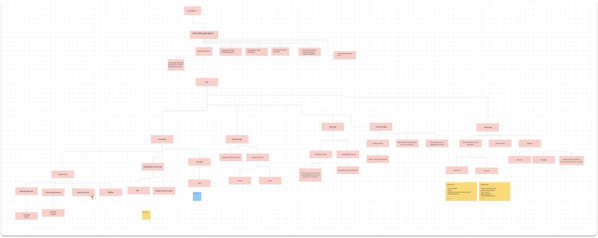
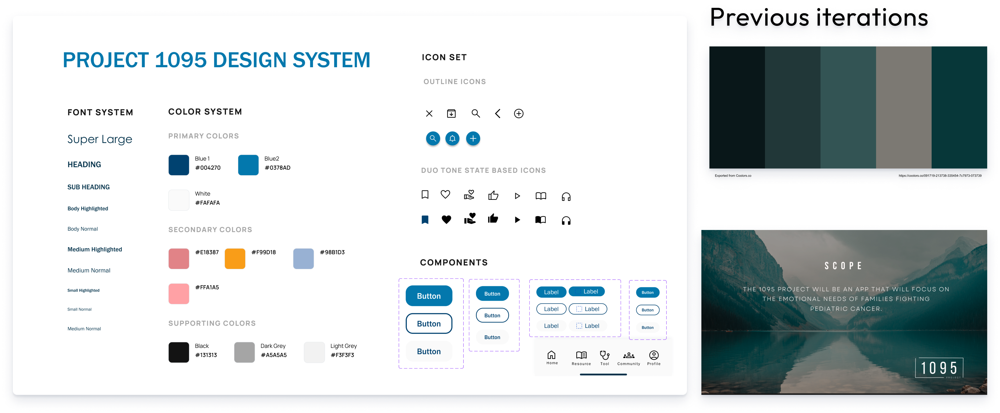
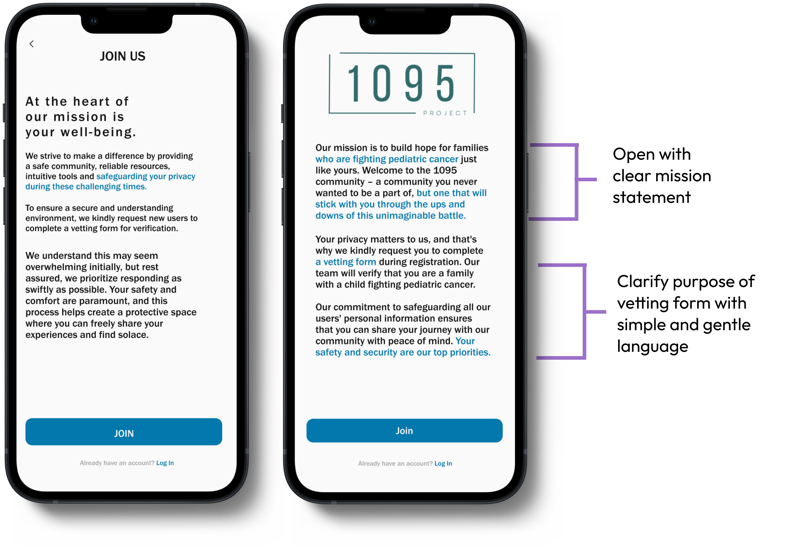
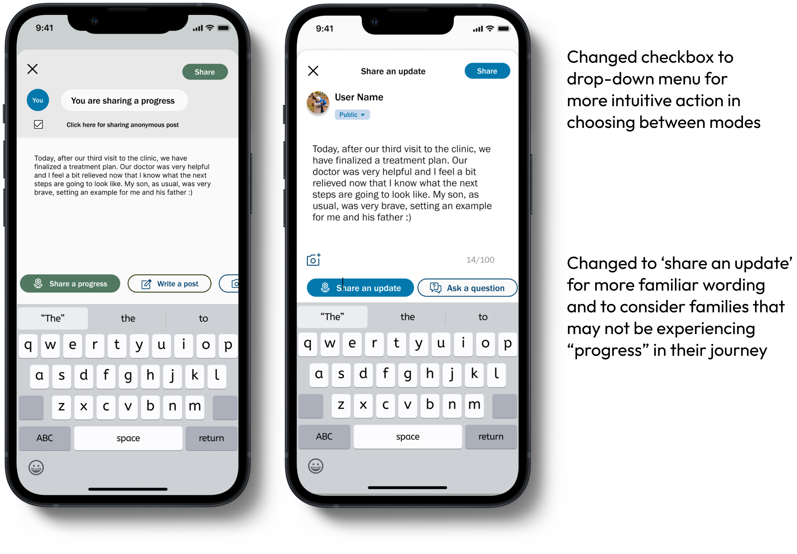
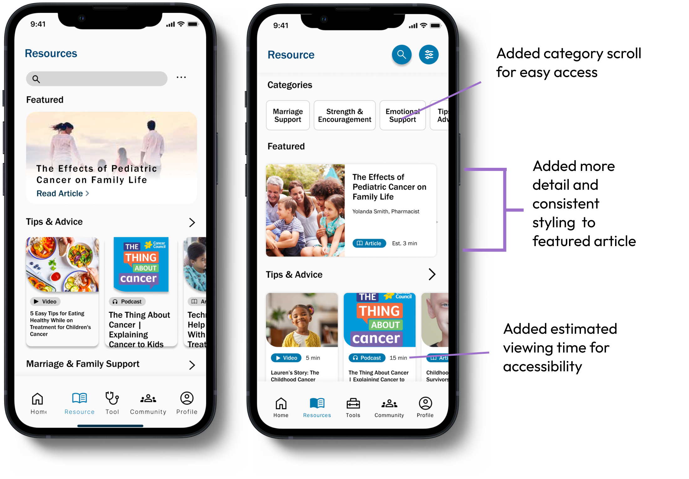
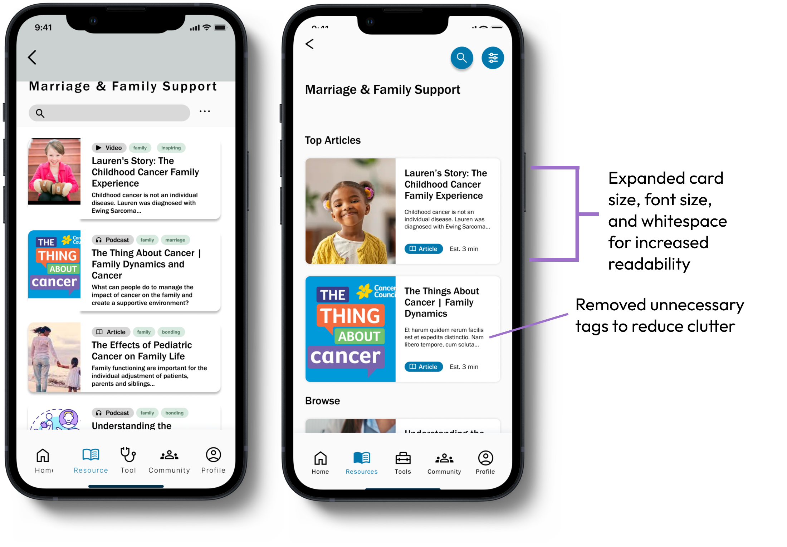
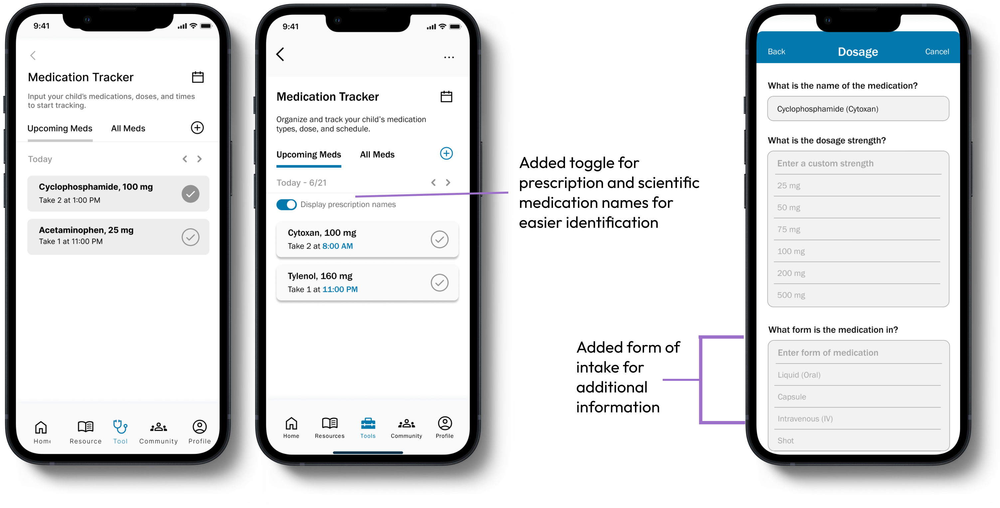

Background
I joined Develop for Good, an organization that gives student designers and engineers an opportunity to create tech solutions for social good. Our team was paired with Roc Solid Foundation, a non-profit that builds hope for children and families fighting cancer through the power of play, founded in 2009 by pediatric cancer survivor Eric Newman.
The Challenge

Roc Solid Foundation currently offers two forms of support through Ready Bags given at at the beginning of the child's journey, and playsets built during treatment, which provide a safe place to play for children with immunocompromised systems.
Though these two initiatives have made a significant impact in the lives of families fighting cancer, Roc Solid Foundation wants to fill in the areas of the 1095 day cycle that their current programs cannot support: everything in-between.
Given the needs of our client, we asked...
How might we design an app to guide and support parents along the full recovery journey for their child with cancer?
Research
- Competitive Analysis
Given the broad nature of our problem space, we performed an exhaustive competitive analysis of over 20 related products, spanning community, hospital care, and treatment provision.
| Category |
Competitors |
Strengths |
| Community |
CoHeals, Caring Bridge, Cancer Buddy, Twill Care etc. |
- Diverse post formats
- Localized events and groups
- Emotional support and resource-sharing
- Private and specialized communities
|
| Hospital |
COGS Kids Care, Abridge,
MY MSK |
- Privacy and security
- Identity verification
- Emergency information access
- Provider messaging
|
| Treatment |
ChemoWave, CircleOf, Outcomes4me |
- Medication and symptom tracking
- Appointment management
- Note-taking
- Personalized reminders
|
The glaring pattern that we noticed was that there was no product on the market that offered a central hub for
- Stakeholder Interviews
In order to get a better insight on the needs and experience of our target users, we observed a focus group of 10 sets of parents undergoing the struggles of pediatric cancer at different treatment stages and conducted an initial stakeholder interview with a Child Life Specialist at RSF.
- Interview Insights
"These new parents haven’t processed things going on, and they don’t hear everything the doctor says. They need that extra time and support to process the shock and start taking action in their treatment."
- Bryan, Child Life Specialist
-
Keep it simple and straightforward
Though the primary audience is centered around parents,the app is targeted at any person facing the diagnosis of a loved one, from grandparents to young care-givers.
- Provide channels for connection and communication
For those who may not have access to a local support system, are too overwhelmed to actively seek support, or for more experienced families that want to reach out to others, users can greatly benefit from listening to other peoples’ stories and sharing their own journey.
- Every family is different
Some families may be more closed off, some may may be eager to connect with others, and some may want to create a platform to vocally advocate for their situation.The app should provide features that can appeal to a variety of families, no matter what they are trying to get out of their experience.
- The need for care doesn’t stop after the hospital
Many parents are forced to become nurses and doctors, constanty monitoring their children's behavior.
This added role on top of being a parent can create cause constant stress, fear, and anxiety and it is essential to provide resources or tools that can help ease this burden.
- Balance sharing with safety and security
Many parents are forced to become nurses and doctors, constanty monitoring their children's behavior.
This added role on top of being a parent can create cause constant stress, fear, and anxiety and it is essential to provide resources or tools that can help ease this burden.
In order to satisfy our clients’ needs, address our user insights, and synthesize our competitive findings, we focused on combining key functionalities from different categories to create a centralized product that that not only nurtures users' psychological well-being but also enhances overall parenting efficiency.
So, our solution evolved into...
Project 1095, a centralized support system for the pediatric cancer journey
Our goal is to help parents and loved ones navigate diagnosis, treatment, and recovery with a safe community and emotional support , accessible resources for learning and sharing information, and convenient tools to keep track of medications and appointments.
Prototyping
- Ideation and Lo-Fidelity Prototypes
With a clear goal in mind, we started by brainstorming our primary features and mapping out the complex information architecture of the app. By establishing the flow of the app, we were able to create our lo-fi prototypes and start to visualize the functionality and interactions of each feature.


- Design System
We went back and forth with our client regarding the color scheme, as they originally wanted to use muted grey and greens to represent balance and serenity.
However, we suggested a more vibrant color scheme, and after validating our choice with users, our final design system uses blue as a primary color for its calming connotation and alignment with Roc Solid’s current brand colors, and pairs it with bright secondary colors to represent hope, energy, and strength.

- Usability Testing
Through each iteration of our prototypes, we went through multiple revisions and meetings with Roc Solid Foundation to properly incorporate their feedback into our design process. In order to collect user feedback and identify any opportunities for improvement, we conducted usability testing with 18 users.
I took responsibility for all data organization and analysis, and I sorted user task performance and responses into actionable insights through affinity mapping.

- Insights and Improvements
Focus on the ‘what’ and the ‘how’
7/18 users were unclear on the purpose of the app from the onboarding process and wanted more initial transparency on what the app was supposed to provide, and how it intended to securely use the information provided by the user

Unclear icons and wording cause confusion
8/18 users experienced confusion on various tasks due to unclear icons and wording. Users cited issues such as confusion about the tonal connotation of Resource categories such as “Tips and Tricks” or sensitivity around the idea of sharing "progress

Intuitive placement and sizing are key
8/18 users had issues reading or finding information due to a lack of readability.


Medication requires more accessible information
9/18 users had issues with the medication tracker feature on the “Tools” page. and requeste that more detailed information and functionality be provided.

Final Product
View our hi-fi prototype
Results
After creating our hi-fi deliverables, 4/4 of our las round of tested users, real parents from Roc Solid Foundation, reacted positively to the app and found it to be impactful, simple, and user-friendly.
Our client was extremely happy with the final product, and we have completed the development hand-off. Our team is currently plays a role of design consultants as Roc Solid prepares for next steps with our prototype.
What I Learned
Communication and clarity lead to client satisfaction
Being transparent with the client about feasibility, working through solutions together, and involving them in every step of the design process creates a connection a deeper level.
How to practice empathy on a nuanced level
Working with such an intense subject as pediatric cancer and the diversity of those it affects has helped me understand the utmost importance of examining users through an empathetic lens.